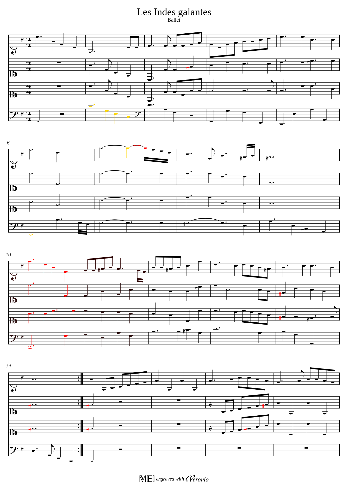
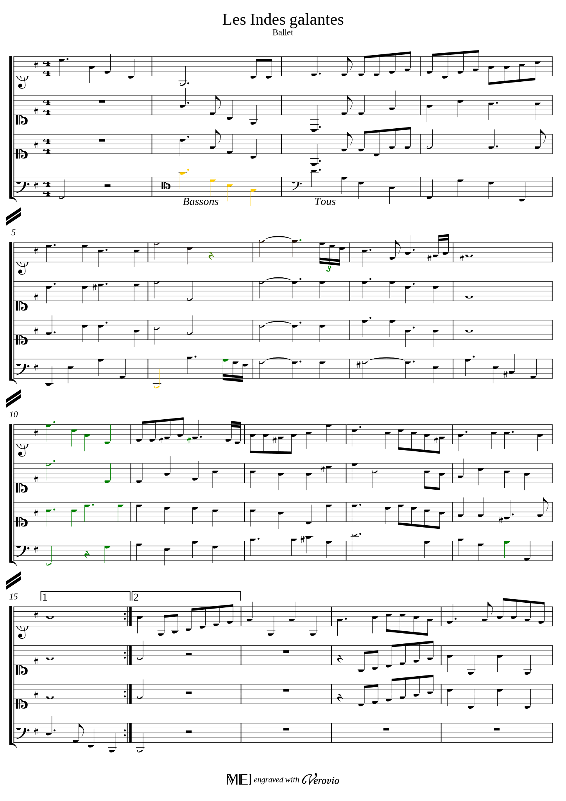

Abstract
We display here some experiments with a tool for comparing XML-MEI music score files (it aims to be an analog for score files of the Unix diff tool for text files).The MEI scores in the dataset were produced by researchers at the laboratory IReMus during the Gioqoso CNRS project. There are built from a corpus of the Bibliothèque nationale de France (BNF, Gallica) containing 21 ouvertures of Jean-Philippe Rameau.
Every example is composed one page OMRized from the manuscripts, and its manual correction. In the experiments, we compute and display side by side the diffs between the OMRized version and the manual version. If one considers the manual version as a ground truth, then the displayed differences can be useful for a fine detection of OMR errors.
Due to copyright issues, most of the examples of the dataset cannot be displayed here. This page will be updated when these issues will be fixed.
Scores from the dataset
Example 1 Rameau: Les Indes Galantes
original manuscript: https://gallica.bnf.fr/ark:/12148/btv1b8451564d/f15.imageOMRized version
Manual correction (ground truth)
- on bar 6, part 1: OMR forgot a rest which is detected as added (green) in the ground truth.
- on bar 6, part 4: the first note has wrong pitch in OMR. this is signaled as a substitution (yellow). There is also a note missed by OMR at the end of the bar (in green in ground truth).
- on bar 7, part 1: note the OMR mistake for rhythm.
- the OMR missed the barline between bar 10 and 11 (for all parts). this is interpreted as having the notes of the first bar (first 4 beats) deleted (in red in OMR version) and reinserted (in green in ground truth).
- on bar 14: a missing note (in green in ground truth).
- in bars 15, 16, 18: the OMR misinterpreted a key signature as an accident on bar 14, and consequently the editor added accidents problems are due to the change of key signature.
About the missing barline: the logic of our diff procedure is to consider the parts as sequences of bars, and to perform bar-by-bar comparison based on the content of bars. The barlines themselves are not considered as a content in this procedure. That explains the displayed difference for bar 10.
More generally, following the above logic, the page layout (organisation of bars in staves and of staves in a page) is not compared by our diff procedure. Moreover, the trill marks are currently ignored by our procedure (that will be treated in a next version), as well as the changes of clef or key signature and also text indications.